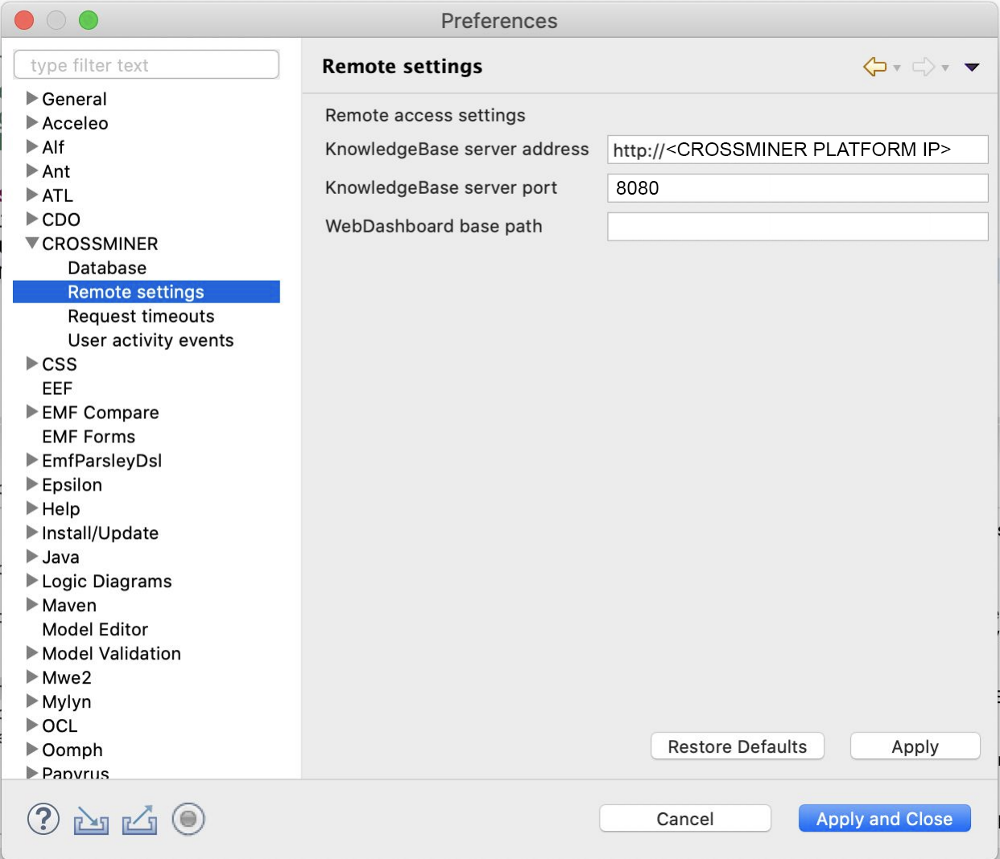

Requirements
Please follow these instructions to prepare for the installation:- Download and install Eclipse (https://www.eclipse.org/downloads/ and choose the JEE distribution)
- Be sure to have JRE and JDK software on your machine
FOCUS Plugin Installation
There are the following steps:- Go to Help->Install new software

- Choose Add and put this site in Location:
Update site
- Check CROSSMINER Eclipse-based IDE and choose Next->Install
- Restart Eclipse
- Go to Window->Preferences->CROSSMINER->Remote settings and choose the
following configuration:
- KnowledgeBase server address->http://178.238.238.209
- KnowledgeBase server port -> 8099
- WebDashboard base path -> https://crossminer.biterg.io
 - set the FOCUS timeouts to 900000
- After you select the code, you can do Right click->CROSSMINER->Request FOCUS Code Snippet recommendation and you got something like that: